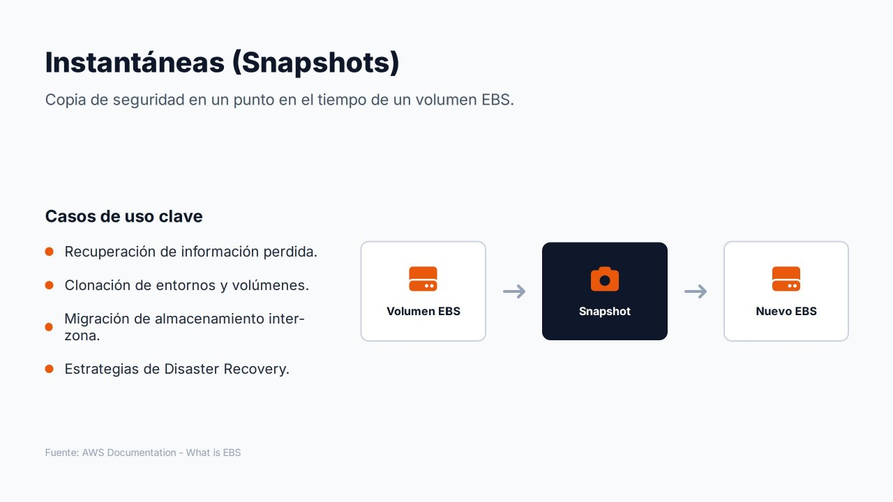
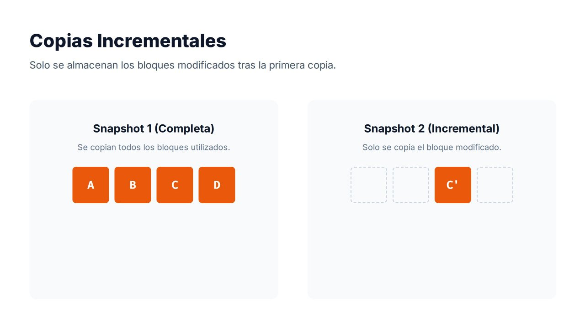
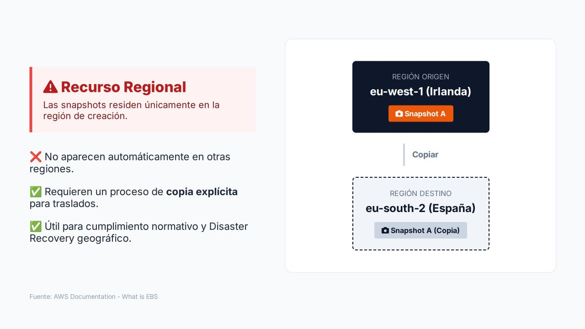

Instantáneas de EBS¶

Las instantáneas (snapshots) son uno de los mecanismos más importantes de protección de datos en Amazon EBS. Una instantánea es una copia de seguridad de un volumen en un momento concreto: AWS captura el estado de sus bloques y permite reconstruir más adelante el volumen exactamente como se encontraba en ese instante.
Sin instantáneas se tendría almacenamiento persistente, pero no una forma eficaz de recuperar la información ante errores o desastres.
Casos de uso¶
| Caso de uso | Descripción |
|---|---|
| Recuperación de información | Ante un borrado accidental, una corrupción de datos o una actualización fallida, se restaura un estado anterior conocido |
| Clonación de entornos | A partir de una instantánea se crean volúmenes idénticos al original para pruebas, laboratorios o preproducción |
| Migración entre zonas de disponibilidad | Un volumen solo existe en una AZ; con una instantánea se crea un volumen nuevo en otra AZ de la región |
| Recuperación ante desastres | Instantáneas periódicas, copiadas a otra región, permiten reconstruir servidores y aplicaciones tras un incidente grave |
| Creación de AMI | Una AMI respaldada por EBS está formada por instantáneas de sus volúmenes |
| Cifrado de volúmenes existentes | Copiando una instantánea con cifrado se obtienen volúmenes cifrados a partir de uno sin cifrar |
El proceso general es sencillo: se parte de un volumen operativo, se crea una instantánea que almacena su estado y, cuando es necesario, se utiliza para generar uno o varios volúmenes nuevos.
Crear la instantánea
- EC2 → Elastic Block Store → Volúmenes y seleccionar el volumen.
- Acciones → Crear instantánea (Create snapshot).
- Escribir una descripción («Datos web antes de actualizar») y añadir la etiqueta
Name = web-pre-update. - Pulsar Crear instantánea.
- En EC2 → Elastic Block Store → Instantáneas, esperar a que el estado de la instantánea pase de Pendiente a Completada. La columna Progreso muestra el avance.
Crear un volumen a partir de ella
- En Instantáneas, seleccionar la instantánea.
- Acciones → Crear volumen a partir de una instantánea (Create volume from snapshot).
- Elegir el tipo (
gp3), el tamaño (igual o mayor que el original) y la zona de disponibilidad de destino (us-east-1b). - Pulsar Crear volumen.
# Crear una instantánea con descripción y etiquetas
aws ec2 create-snapshot --volume-id vol-0123456789abcdef0 \
--description "Datos web antes de actualizar" \
--tag-specifications 'ResourceType=snapshot,Tags=[{Key=Name,Value=web-pre-update}]'
# Esperar a que termine
aws ec2 wait snapshot-completed --snapshot-ids snap-0abc...
# Crear un volumen nuevo a partir de ella, en otra AZ
aws ec2 create-volume --snapshot-id snap-0abc... \
--availability-zone us-east-1b --volume-type gp3
Copias incrementales¶

Las instantáneas de EBS son incrementales:
- La primera instantánea copia todos los bloques que contienen datos (no los bloques vacíos).
- Las siguientes solo almacenan los bloques que han cambiado desde la instantánea anterior.
En el ejemplo de la figura, la primera instantánea contiene los bloques A, B, C y D. Después se modifica únicamente el bloque C. La segunda instantánea no vuelve a almacenar A, B y D, porque siguen siendo idénticos: solo guarda la nueva versión C'.
¿Cómo se restaura una instantánea completa si solo contiene los cambios? AWS mantiene una estructura de referencias entre instantáneas. Aunque físicamente solo se almacenen los bloques modificados, cada instantánea es autosuficiente y puede utilizarse por sí sola para crear un volumen completo.
Este diseño aporta tres ventajas:
- Reduce considerablemente el espacio consumido y, por tanto, el coste.
- Reduce el tiempo necesario para crear cada instantánea.
- Permite realizar copias frecuentes sin que el coste crezca en proporción al tamaño del volumen.
¿Qué ocurre al borrar una instantánea?
Al eliminar una instantánea, AWS solo borra los bloques que no son necesarios para ninguna otra. Se puede eliminar cualquier instantánea intermedia sin perder la capacidad de restaurar las demás. Por esa misma razón, borrar instantáneas antiguas no siempre libera tanto espacio como su tamaño aparente.
Consistencia de la instantánea¶
Una instantánea captura los bloques escritos en el volumen en el instante de su creación. Los datos que la aplicación o el sistema operativo tienen todavía en memoria no se incluyen. Para obtener una copia coherente:
- En un volumen de datos, se puede detener la escritura de la aplicación o desmontar el volumen durante el inicio de la instantánea.
- En bases de datos, se utilizan los mecanismos del motor (vaciado de tablas, modo de copia de seguridad) o, mejor, las copias del propio servicio gestionado.
-
Para instancias con varios volúmenes, se pueden crear instantáneas coherentes entre sí (crash-consistent) de todos los volúmenes en el mismo instante:
- EC2 → Elastic Block Store → Instantáneas → Crear instantánea.
- En Tipo de recurso, elegir Instancia y seleccionar la instancia.
- Opcionalmente, excluir el volumen raíz y marcar Copiar etiquetas del volumen de origen.
- Crear instantánea: se genera una instantánea por volumen, todas del mismo instante.
La instantánea comienza en un instante concreto y se completa de forma asíncrona: mientras su estado es pending, el volumen puede seguir utilizándose con normalidad.
Recurso regional¶

Las instantáneas son recursos regionales: se almacenan de forma redundante en varias zonas de disponibilidad de la región (en un almacenamiento gestionado por AWS sobre Amazon S3, que no aparece entre los buckets del cliente) y solo están disponibles en la región en la que se crearon.
Por ejemplo, una instantánea creada en Irlanda (eu-west-1) no aparece automáticamente en España (eu-south-2). Para usarla en otra región hay que realizar una copia explícita, que crea una instantánea nueva e independiente en el destino:
- En la región de origen (
eu-west-1), ir a EC2 → Elastic Block Store → Instantáneas y seleccionar la instantánea. - Acciones → Copiar instantánea (Copy snapshot).
- Indicar una descripción y la Región de destino (
eu-south-2). - Marcar Cifrar esta instantánea y elegir la clave de KMS de la región de destino.
- Pulsar Copiar instantánea.
- Cambiar a la región de destino en el selector de regiones: la copia aparece en Instantáneas con estado Pendiente hasta completarse.
Este comportamiento no es un inconveniente, sino una decisión de diseño:
- Cumplimiento normativo: muchas organizaciones deben garantizar que ciertos datos permanecen en una ubicación geográfica concreta. Que las instantáneas no salgan de la región sin una acción explícita facilita ese control.
- Recuperación ante desastres: copiar instantáneas a una segunda región, a cientos o miles de kilómetros, evita que un único incidente regional comprometa la continuidad del negocio.
Alta disponibilidad no es recuperación ante desastres
La replicación interna de EBS protege frente a fallos dentro de una zona de disponibilidad. Las instantáneas regionales protegen frente a la pérdida de una zona. Solo las copias a otra región protegen frente a incidentes que afecten a toda la región. En arquitecturas empresariales es habitual definir una región principal para producción y una o varias secundarias donde se guardan copias para la continuidad operativa.
Funcionalidades avanzadas de las instantáneas¶
| Funcionalidad | Para qué sirve | Consideraciones |
|---|---|---|
| Nivel de archivo (EBS Snapshots Archive) | Guardar instantáneas que se conservan mucho tiempo y casi nunca se restauran (normativa, cierres anuales) | Almacenamiento hasta un 75 % más barato; permanencia mínima de 90 días; restaurar tarda entre 24 y 72 horas y tiene coste |
| Papelera de reciclaje (Recycle Bin) | Recuperar instantáneas y AMI borradas por error | Se definen reglas de retención (por ejemplo, conservar 7 días lo borrado) |
| Bloqueo de instantáneas (Snapshot Lock) | Impedir que nadie, ni siquiera un administrador, borre una instantánea durante un periodo | Modo governance (los usuarios con permiso pueden desbloquear) o compliance (inmutable); protege frente a ransomware |
| Restauración rápida (Fast Snapshot Restore) | Que los volúmenes creados desde una instantánea ofrezcan todo su rendimiento desde el primer momento | Se activa por instantánea y AZ y tiene coste por hora |
| Compartir instantáneas | Usar una instantánea en otra cuenta de AWS | Las cifradas con la clave administrada por AWS no se pueden compartir; hace falta una clave del cliente |
| Bloqueo del acceso público | Impedir a nivel de región que las instantáneas se compartan públicamente | Muy recomendable: una instantánea pública expone todo el disco |
Inicialización de volúmenes restaurados
Un volumen creado desde una instantánea está disponible de inmediato, pero sus bloques se descargan del almacenamiento de instantáneas la primera vez que se leen. Ese primer acceso tiene más latencia. Si se necesita el rendimiento completo desde el principio (por ejemplo, al restaurar una base de datos de producción), se activa Fast Snapshot Restore o se leen previamente todos los bloques con herramientas como fio o dd.
Automatización de las instantáneas¶
Crear instantáneas a mano no es una estrategia de copia de seguridad. En producción se programan con:
- Amazon Data Lifecycle Manager (DLM): políticas que seleccionan volúmenes o instancias por etiquetas, definen la frecuencia (por ejemplo, cada 12 horas), la retención (por número o por antigüedad), la copia a otra región y el paso al nivel de archivo.
- AWS Backup: servicio centralizado que gestiona copias de EBS, EFS, RDS, DynamoDB y otros servicios con planes de copia comunes.
Ambos se estudian en el apartado de copias de seguridad y recuperación. Como las instantáneas son incrementales, es habitual programarlas varias veces al día en entornos productivos: cuanto más frecuentes, menor es la cantidad de información que podría perderse entre el último respaldo y un fallo.
Referencias¶
- AWS. Amazon EBS snapshots — Instantáneas de EBS
- AWS. How Amazon EBS snapshots work — Funcionamiento incremental
- AWS. Copy an Amazon EBS snapshot — Copia de instantáneas
- AWS. Archive Amazon EBS snapshots — Nivel de archivo
- AWS. Recycle Bin — Papelera de reciclaje
- AWS. Lock Amazon EBS snapshots — Bloqueo de instantáneas
- AWS. Amazon EBS fast snapshot restore — Restauración rápida
- AWS. Block public access for snapshots — Bloqueo del acceso público